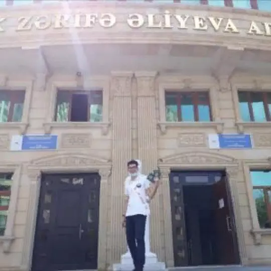

Breath OS Team
Roman Tolstosheyev
Owner and developer

Azer Sadykhzadeh
Dedigner and developer
Huge thanks to:
- Ramin Alinazim Mahmudzade – the idea of the OS for Azerbaijan
- Sevil Allahverdi Abdinova – assistance and moral support
- Konul Camal Agayeva – supervising and preparation for "Sabahın Alimləri"
- Natalya Dmitriyevna Qurbanova – assistance and moral support
- Rasim Yusif Sadykhzadeh – helping with design
- Mehpare Rzaqulu Huseynova – helping in translation
- Aydin Frudin Huseynov – helping with documents and moral support
- Naila Rizvan Allahverdiyev – supervising
Contact with us
-
Email
rnbtree@mail.az -
Social media